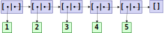

Las tuplas son colecciones que agrupan varios valores.
Tienen un tamaño fijo.
Las tuplas se representan mediante llaves
({ y }) y sus elementos están separados por
comas.
Ejemplos:
{3, 4}
{:ok, 2}
{3.2, 1.4, 4}
{:error, :not_found}
{:ok, "Juan Luis", 32}
{:rectangle, {23, 1}, :red}
La función elem/2 permite acceder a los elementos a
partir de su índice.
Los índices se numeran desde el 0.
> t = {:ok, 3, "J"}
> elem(t, 0)
:ok
> elem(t, 1)
3No obstante, lo habitual es utilizar ajuste de patrones para acceder a las componentes.
Las tuplas son inmutables.
No obstante, es posible crear una tupla a partir de otra mediante
put_elem/3.
put_elem(t, idx, v) crea una copia de la tupla
t, pero colocando el valor v en la posición
idx.> t1 = {1, :hola, 6, 10}
> t2 = put_elem(t1, 2, :adios)
> t2
{1, :hola, :adios, 10} Tupla modificada
> t1
{1, :hola, 6, 10} La tupla original se conserva > t1 = {1, :hola, 6, 10}
> t2 = put_elem(t1, 2, :adios)
El resultado de put_elem comparte los elementos no
modificados en la tupla original.
No hay peligro: todos los valores en Elixir son inmutables.
Acceso: O(1)
Modificación: O(n), donde n es el tamaño de la tupla.
Las tuplas suelen tener pocos elementos.
Si se desea manejar una cantidad indefinida de elementos, lo habitual es utilizar una lista.
Las listas son tipos de datos que permiten almacenar colecciones de elementos.
En programación funcional, el tipo de datos de las listas se define de forma recursiva.
Una lista puede ser:
[], que denota la lista vacía, o bien,
[x | xs], que denota una lista cuyo primer elemento
es x, seguido de xs, que a su vez es otra
lista.
A x se denomina cabeza de la lista, y
xs es la cola de la lista.
[3 | []]
Representa la lista cuyo primer elemento es el 3,
seguido de la lista vacía.
3.[5 | [3 | []]]
5, y el segundo es el 3.La siguiente lista contiene los números desde el 1 al 5, en orden ascendente:
[1 | [2 | [3 | [4 | [5 | []]]]]]
En cuanto a almacenamiento, las listas funcionales son similares a las listas enlazadas de los lenguajes imperativos:

Elixir proporciona una sintaxis para expresar listas de una manera más cómoda.
En lugar de:
[1 | [2 | [3 | [4 | [5 | []]]]]]
puede escribirse
[1, 2, 3, 4, 5]
Es decir, la lista se expresa mediante corchetes ([
y ]) y los elementos se separan mediante comas.
En general, la notación:
[x0, x1, …, xn]
equivale a:
[x0 | [x1 | [… | [xn | []] … ]]
Por otro lado, la notación
[x0, x1, … xn | v]
equivale a:
[x0 | [x1 | [… | [xn | v] … ]]
iex, las listas se muestran con la
sintaxis «azucarada»:> [1 | [2 | [4 | []]]]
[1, 2, 4]
> [1 | []]
[1]
> [1, 2 | []]
[1, 2]
> [1, 5 | [7, 9]]
[1, 5, 7, 9] La función hd/1 devuelve la cabeza
de una lista no vacía.
> hd([1, 2, 5])
1
> hd([])
** (ArgumentError) not a nonempty listLa función tl/1 devuelve la cola de
una lista no vacía
> tl([1, 2, 5])
[2, 5]
> tl([])
** (ArgumentError) not a nonempty list> xs = [:a, :b, :c, :d]
> hd(xs) Primer elemento
:a
> hd(tl(xs)) Segundo elemento
:b
> hd(tl(tl(xs))) Tercer elemento
:c No obstante, lo habitual es utilizar ajuste de patrones para acceder a la cabeza y cola de una lista.
length/1: devuelve la longitud de una lista.
> length([1, 4, 6])
3
> length([])
0Enum.at/2: obtiene un elemento a partir de su
posición.
> Enum.at([10, 9, 3, 6], 2)
3Enum.take/2: construye una lista con los n
primeros elementos de otra.
> Enum.take([0, 9, 3, 5], 2)
[10, 9]Enum.drop/2: construye una lista a partir de otra,
descartando los n primeros elementos.
> Enum.drop([0, 9, 3, 5], 2)
[3, 5]++/2: concatena dos listas.
> [1, 4] ++ [4, 6, 8]
[1, 4, 4, 6, 8]